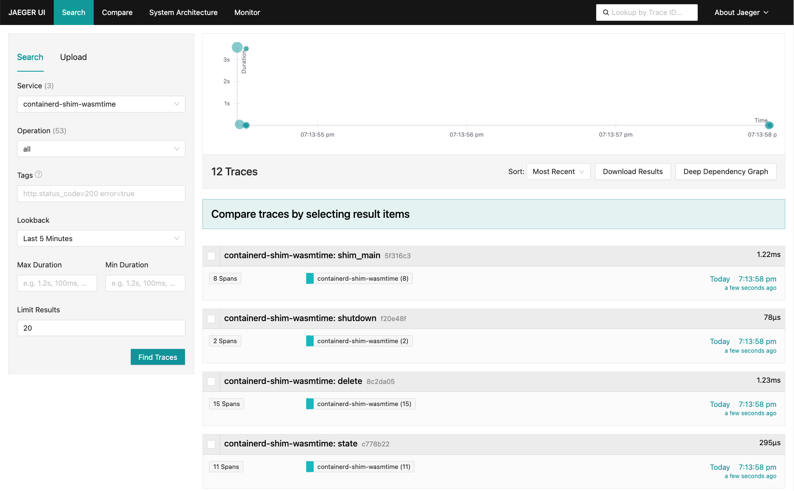
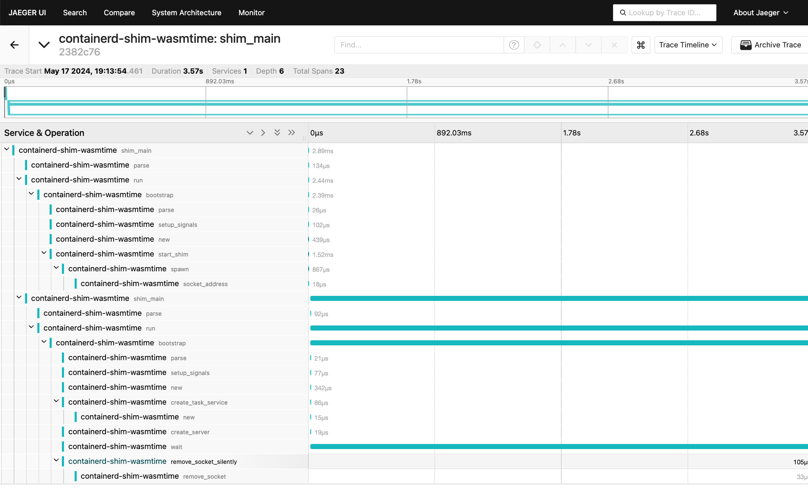

OpenTelemetry
OpenTelemetry is a set of libraries, agents, and instrumentation to provide observability (metrics, logs and traces) in applications.
containerd-shim-wasm crate has a set of APIs to enable OpenTelemetry tracing in the shim. This document is a guide on how to use OpenTelemetry tracing in your shim.
Usage
Wasmtime shim v0.5.0 has OpenTelemetry tracing enabled by default
To use OpenTelemetry tracing in your shim, you need to use the opentelemetry feature in the containerd-shim-wasm crate.
containerd-shim-wasm = { workspace = true, features = ["opentelemetry"] }
Then, you may use the containerd_shim_wasm::sandbox::cli::shim_main function to run the shim with OpenTelemetry tracing.
fn main() { shim_main::<WasmtimeInstance>("wasmtime", version!(), revision!(), "v1", None); }
You may also use the containerd_shim_wasm::sandbox::shim::OtlpConfig struct to configure the OpenTelemetry tracing manually.
Running containerd with OpenTelemetry
You can configure / run containerd with OpenTelemetry tracing. Please refer to the containerd documentation for more information.
OTEL_EXPORTER_OTLP_ENDPOINT=http://localhost:4318
# by default, Containerd uses the `http/protobuf` protocol
Runwasi will automatically pick up the environment variables and start exporting traces to the specified endpoint.
Jeager Exporter
You may use Jeager exporter to see the traces in the Jeager UI.
docker run -d -p16686:16686 -p4317:4317 -p4318:4318 -e COLLECTOR_OTLP_ENABLED=true jaegertracing/all-in-one:latest
You can access the Jeager UI at http://localhost:16686.
Demo
Assuming you installed the containerd-shim-wasmtime-v1 shim binary and the demo wasm image following README.md instructions,
you can run the wasmtime shim with OpenTelemetry tracing by running the following command
sudo ctr run --net-host --rm --runtime=io.containerd.wasmtime.v1 ghcr.io/containerd/runwasi/wasi-demo-app:latest testwasm /wasi-demo-app.wasm sleep 3


Environment Variables
Runwasi uses the standard OTLP environment variables to configure the OTLP exporter endpoint. The following environment variables are supported:
OTEL_EXPORTER_OTLP_ENDPOINT- A base endpoint to send trace data to.OTEL_EXPORTER_OTLP_TRACES_ENDPOINT- The endpoint to send trace data to. OverridesOTEL_EXPORTER_OTLP_ENDPOINT.OTEL_EXPORTER_OTLP_PROTOCOL- A base protocol to use when sending trace data. Default ishttp/protobuf. Valid values arehttp/protobuf,grpc.OTEL_EXPORTER_OTLP_TRACES_PROTOCOL- The protocol to use when sending trace data. OverridesOTEL_EXPORTER_OTLP_PROTOCOL.OTEL_SDK_DISABLED- Disables the SDK if set totrue.OTEL_SERVICE_NAME- The name of the service.
Context Propagation
Runwasi uses the TRACECONTEXT environment variable to propagate the trace context between the parent shim process and the child. The trace context is a W3C Trace Context header.